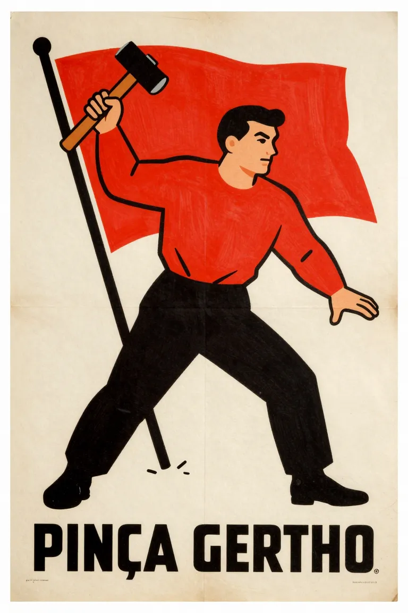

A strip of cartoon panels with short rhymed captions, cut as paper stencils and painted by hand, then copied for shop windows. The flat colour, thick black contour and fast brush work follow from the speed of the news.

Core thesis
A news poster that artists can paint in one night must use few flat colours, a heavy contour and a rhyme that a passer-by reads in seconds.
Design principles
Split each message into 4–12 panels in one strip; give each panel one figure and one short line of verse.
Draw a heavy black contour of 3–6 mm round each figure; it holds the shape when a stencil shifts.
Use 3–5 flat opaque colours: red, yellow ochre, blue and black. Do not blend them.
Cut one paper stencil for each colour and keep the bridges that hold the islands in place.
Letter the caption by hand, in capitals, in the same black as the contour.
Make the enemy small, ugly and clear; make the worker large, in red.
Paint on cheap wrapping paper or newsprint, and leave the brush edges and drips.